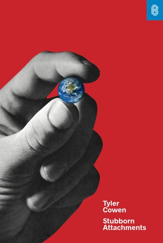
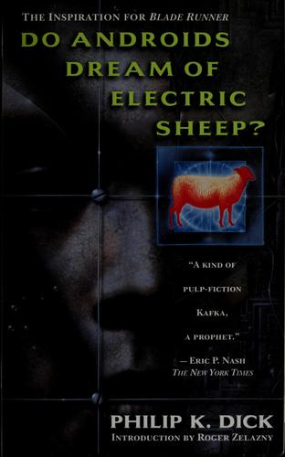
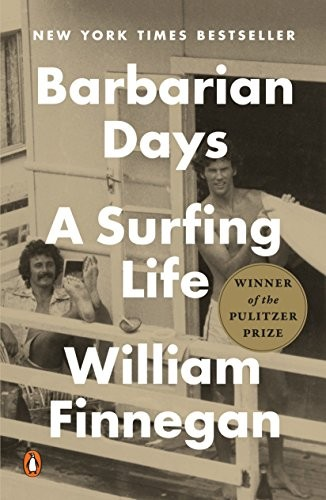
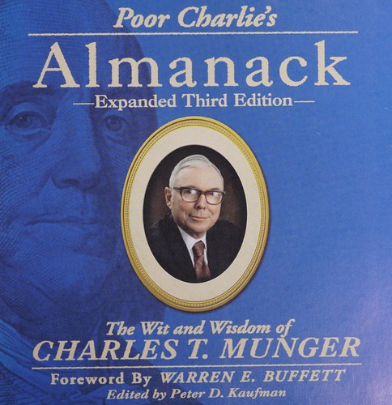
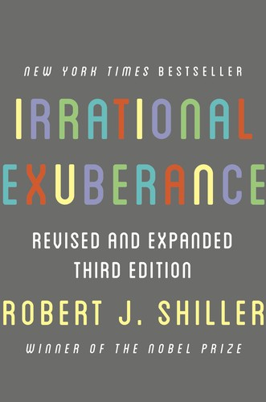
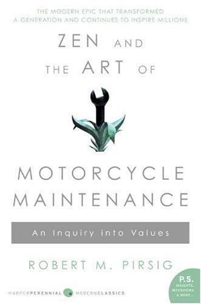
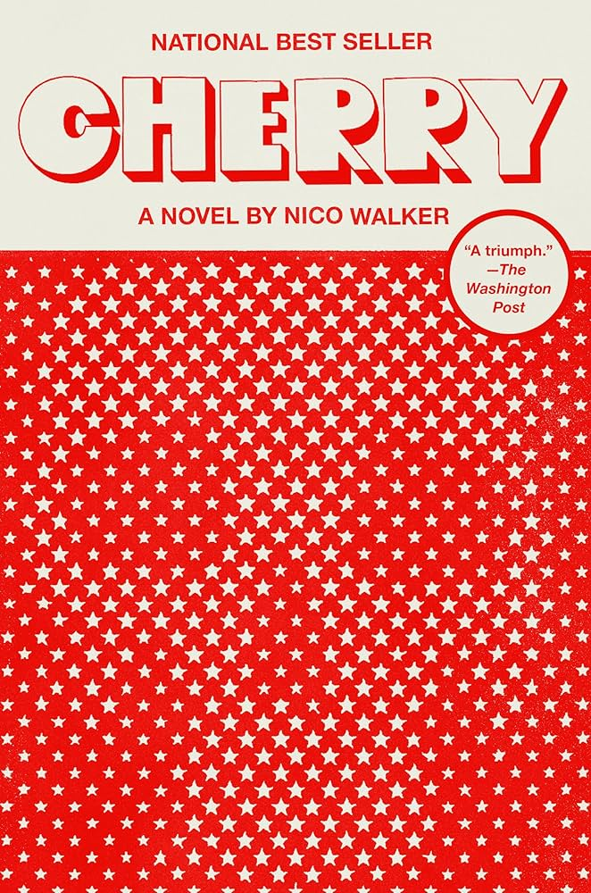
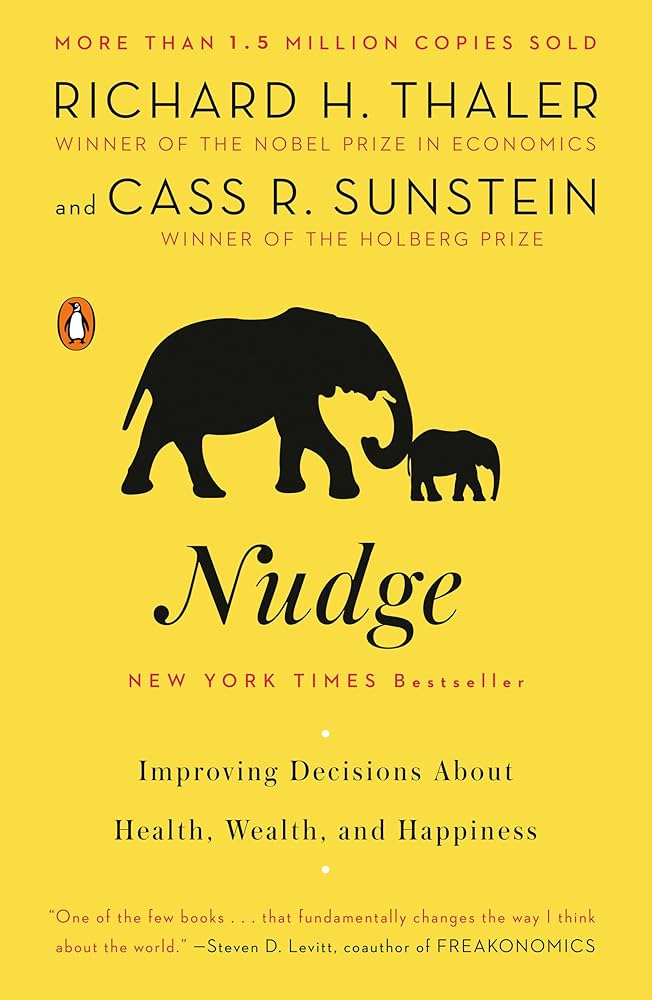

Bookshelf
Books I've read in no particular order. Click on the spine to pull it off the shelf.
High-Risers

Against the Gods

Barbarians at the Gate

The Power Broker
An Economist Gets Lunch

Stubborn Attachments

Do Androids Dream of Electric Sheep?

Barbarian Days

Thinking, Fast and Slow

The Essential Keynes
The Fran Lebowitz Reader

Going Infinite

Poor Charlie's Almanack
Homage to Catalonia
Down and Out in Paris and London

Irrational Exuberance
Misbehaving
Walden and Other Writings

Am I Being Too Subtle?

Working
Silence
The Ascent of Money

A Peace to End All Peace
Words Without Music
Against Everything

The Art of Doing Science and Engineering

Steve Jobs

Benjamin Franklin
Manias, Panics and Crashes

Liar's Poker
Boomerang

What I Talk About When I Talk About Running

Burmese Days

Zen and the Art of Motorcycle Maintenance
Vineland
Zen Mind, Beginner's Mind

Fear and Loathing on the Campaign Trail '72

Cherry
Keynes Hayek

Classic Krakauer

Red Earth and Pouring Rain

Nudge
Justice

The Last Conservative

The Path to Power

Breakneck